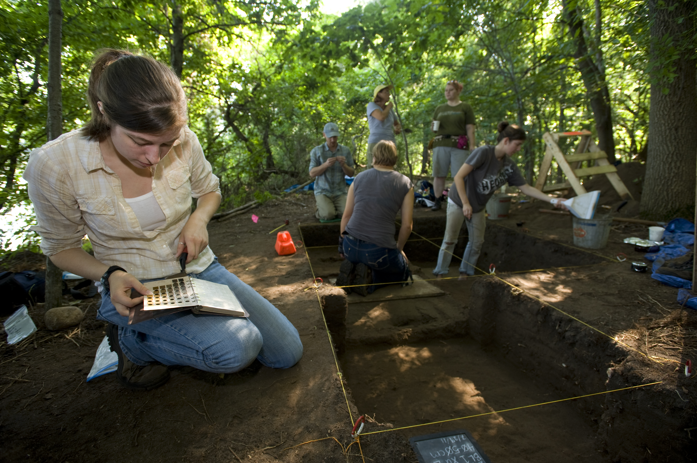

Cognition, Measurement and Evaluation (CME)
The Cognition, Measurement and Evaluation (CME) project was designed to combine recent thinking from cognitive science about scientific reasoning and the latest trends in evaluation and measurement techniques to develop a test of scientific reasoning. The test was designed to evaluate the impact of science education programs on the scientific reasoning of middle and high school students as well as adults. This web site presents the results of that project which ended in August, 2014. The site includes an abstract of the project (link or listed on the side), a detailed description of the methods used to develop the test of scientific reasoning (link), and the actual items along with their use statistics (link). The hope is that these items will be used by program evaluators to help evaluate science education programs. The project was supported by National Science Foundation Grant #1118433. The views expressed on this site are those of the authors and not necessarily those of the National Science Foundation.

Revised July 2014